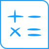
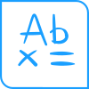

Text
Simple block of multi-line text.
Text
Simple block of multi-line text.
Websocket
Get Started
Disable guides
Eraser
Use local storage to save text
Custom lexicon
Custom pre-loaded resource
Customize editor style
Customize font and style of stroke
Import pointer events
Import text
Searching text (without Smart Guide)
Interact
Highlight words
Use multiple inputs fields
Produce file from writing (docx, html...)
REST
Getting Started
Customize style of stroke

Math
Block supporting one or more equation.
Math
Block supporting one or more equation.
Websocket
Get Started
Eraser
Custom resource math
Custom resource math (pre-compiled)
Import JIIX
Math inside page
Draw graph
REST
Getting Started
Diagram
Block supporting a diagram, with automatic text/non-text distinction and dynamic reorganization possibilities.
Diagram
Block supporting a diagram, with automatic text/non-text distinction and dynamic reorganization possibilities.
REST
Get Started
Import pointer events

Raw Content
Block hosting digital ink with no explicit segmentation into text, math, diagram or other items which semantics is known by iink SDK.
Raw Content
Block hosting digital ink with no explicit segmentation into text, math, diagram or other items which semantics is known by iink SDK.
REST
Get Started
Not Specific
For all recognition types
Not Specific
For all recognition types
Change configuration
Websocket
Configure on-demand export
Handle errors
REST
Without UI
Development
For developers who want to integrate link-ts
Development
For developers who want to integrate link-ts
Configuring debug trace
Websocket
Custom recognizer
Custom grabber
REST
Custom recognizer
Custom grabber